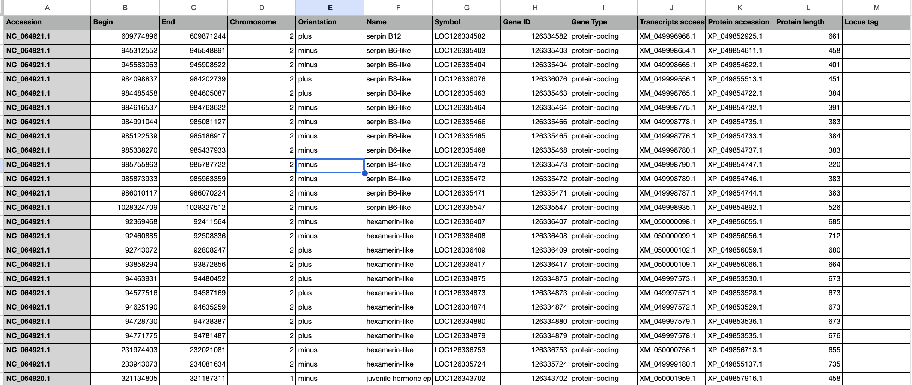

Last updated: 2025-04-10
Checks: 7 0
Knit directory: song-lab/
This reproducible R Markdown analysis was created with workflowr (version 1.7.1). The Checks tab describes the reproducibility checks that were applied when the results were created. The Past versions tab lists the development history.
Great! Since the R Markdown file has been committed to the Git repository, you know the exact version of the code that produced these results.
Great job! The global environment was empty. Objects defined in the global environment can affect the analysis in your R Markdown file in unknown ways. For reproduciblity it’s best to always run the code in an empty environment.
The command set.seed(20240605) was run prior to running
the code in the R Markdown file. Setting a seed ensures that any results
that rely on randomness, e.g. subsampling or permutations, are
reproducible.
Great job! Recording the operating system, R version, and package versions is critical for reproducibility.
Nice! There were no cached chunks for this analysis, so you can be confident that you successfully produced the results during this run.
Great job! Using relative paths to the files within your workflowr project makes it easier to run your code on other machines.
Great! You are using Git for version control. Tracking code development and connecting the code version to the results is critical for reproducibility.
The results in this page were generated with repository version a5e996b. See the Past versions tab to see a history of the changes made to the R Markdown and HTML files.
Note that you need to be careful to ensure that all relevant files for
the analysis have been committed to Git prior to generating the results
(you can use wflow_publish or
wflow_git_commit). workflowr only checks the R Markdown
file, but you know if there are other scripts or data files that it
depends on. Below is the status of the Git repository when the results
were generated:
Ignored files:
Ignored: .DS_Store
Ignored: .RData
Ignored: .Rhistory
Ignored: analysis/.DS_Store
Note that any generated files, e.g. HTML, png, CSS, etc., are not included in this status report because it is ok for generated content to have uncommitted changes.
These are the previous versions of the repository in which changes were
made to the R Markdown (analysis/Apollo.Rmd) and HTML
(docs/Apollo.html) files. If you’ve configured a remote Git
repository (see ?wflow_git_remote), click on the hyperlinks
in the table below to view the files as they were in that past version.
| File | Version | Author | Date | Message |
|---|---|---|---|---|
| html | a5e996b | ecbaker7-tamu | 2025-04-10 | Update Apollo.html |
| Rmd | b02d002 | ecbaker7-tamu | 2025-01-16 | Fix photo |
| html | b02d002 | ecbaker7-tamu | 2025-01-16 | Fix photo |
| html | aaa78c4 | ecbaker7-tamu | 2025-01-16 | Build site. |
| Rmd | 388a8c2 | ecbaker7-tamu | 2025-01-16 | wflow_publish(c("analysis/augustus.Rmd", "analysis/barkdull.Rmd", |
Apollo i5 is a program developed by the USDA used for manual genome annotation. Genomes are available by request on the Apollo i5 website. You must fill out the request form on this website to use this software.
The following steps are compiled from these links:
Web Apollo Intro by Monica Munoz-Torres
All of these links include other resources for more specific cases, but these are good for general knowledge of the program. The following steps are the general process and usage of Apollo for manual genome curation.
I began by creating an Excel spreadsheet / Google Sheet of all of the proteins of interest for each species we wanted to annotate. Included below is a screenshot of the page for Schistocera Gregaria and our proteins of interest: hexamerins, cuticle proteins, juvenile hormones, and serpins.

Each species should have its own page in this spreadsheet following this format. I then took the Orthogroups.txt from our run of the Formicidae Molecular Evolution pipeline by Megan Barkdull and saved it as a space-delimited file, then added it as a page to our spreadsheet.
Replace all periods in the Protein accession column with an underscore. For example, XP_049852925.1 becomes XP_049852925_1. I did this by copy and pasting this column into a new temporary page, finding and replacing all periods with an underscore, and then pasting the corrected column back into the original spreadsheet page.
Remove all species prefixes. So for example Amel_XP_026299083_1 becomes XP_026299083_1. I did this by searching for {species prefix}_X and replacing with X. So in this example, I would search for Amel_X and replace with X. Do this for whatever species you’re currently working on.
Now that our data is in the correct format, we can begin searching our orthogroups and list of genes for overlapping data. More specifically, we want to know which genes are in an orthogroup and which orthogroups contain our genes of interest. I did this using the following Google Sheets script, but this can also easily be done in Excel. This script was used on Schistocerca Gregaria, so you will need to change the names containg Gregaria accordingly.
function colorOrthogroupsByGregaria() {
// Open the active spreadsheet
const spreadsheet = SpreadsheetApp.getActiveSpreadsheet();
// Get the sheets
const orthogroupsSheet = spreadsheet.getSheetByName("Orthogroups");
const gregariaSheet = spreadsheet.getSheetByName("Gregaria");
// Get the data ranges
const orthogroupsData = orthogroupsSheet.getDataRange().getValues();
const gregariaData = gregariaSheet.getDataRange().getValues();
// Define the color map for Gregaria column F
const colorMap = {
"Serpin": "#9bfdff", // Turquoise for serpin
"Hexamerin": "#e1c4ff", // Light purple for hexamerin
"Cuticle Protein": "#b5b6ff", // Indigo for cuticle protein
"Juvenile Growth Hormone": "#fe90ff" // Magenta for juv. growth hormone
};
// Clear previous formatting in Orthogroups
orthogroupsSheet.getDataRange().setBackground(null);
// Iterate through Orthogroups rows
for (let oRow = 0; oRow < orthogroupsData.length; oRow++) {
const orthogroupsCell = orthogroupsData[oRow][8]; // Cell from column I (zero-based index 8)
let matchedColor = null; // Track the matching color
// Skip empty Orthogroups cells in column I
if (!orthogroupsCell) continue;
// Split the Orthogroups cell into words or tokens
const orthogroupsTokens = orthogroupsCell.split(/\s+/); // Split by whitespace
// Check each token against Gregaria column K
for (let gRow = 0; gRow < gregariaData.length; gRow++) {
const gregariaTerm = gregariaData[gRow][10]; // Term from column K (zero-based index 10)
const category = gregariaData[gRow][5]; // Value from column F in Gregaria (zero-based index 5)
// Skip empty Gregaria cells in column K
if (!gregariaTerm) continue;
// Check if any token matches the Gregaria term
for (let token of orthogroupsTokens) {
if (token.includes(gregariaTerm)) {
matchedColor = colorMap[category] || null;
break; // Exit the innermost loop after finding the first match
}
}
if (matchedColor) break; // Exit the Gregaria loop after finding the first match
}
// Apply the matched color to the current row in Orthogroups
if (matchedColor) {
orthogroupsSheet.getRange(oRow + 1, 1, 1, orthogroupsData[oRow].length)
.setBackground(matchedColor);
}
}
}
function colorGregariaByOrthogroups() {
// Open the active spreadsheet
const spreadsheet = SpreadsheetApp.getActiveSpreadsheet();
// Get the sheets
const orthogroupsSheet = spreadsheet.getSheetByName("Orthogroups");
const gregariaSheet = spreadsheet.getSheetByName("Gregaria");
// Get the data ranges
const orthogroupsData = orthogroupsSheet.getDataRange().getValues();
const gregariaData = gregariaSheet.getDataRange().getValues();
// Define colors for Gregaria rows
const gregariaMatchColor = "#ADD8E6"; // Light blue for matches
const gregariaNoMatchColor = "#FFA07A"; // Light orange for no matches
// Clear previous formatting in Gregaria
gregariaSheet.getDataRange().setBackground(null);
// Iterate through Gregaria rows
gregariaData.forEach((gregariaRow, gregariaIndex) => {
const gregariaTerm = gregariaRow[10]; // Term from column K (zero-based index 10)
let found = false; // Track if the term is found
// Check against Orthogroups rows
orthogroupsData.forEach(orthogroupsRow => {
const orthogroupsTerm = orthogroupsRow[8]; // Term from column I (zero-based index 8)
if (orthogroupsTerm && gregariaTerm && orthogroupsTerm.includes(gregariaTerm)) {
found = true;
}
});
// Color the Gregaria row based on whether the term was found
const gregariaColor = found ? gregariaMatchColor : gregariaNoMatchColor;
gregariaSheet.getRange(gregariaIndex + 1, 1, 1, gregariaRow.length)
.setBackground(gregariaColor);
});
}
sessionInfo()R version 4.4.2 (2024-10-31)
Platform: aarch64-apple-darwin20
Running under: macOS Sequoia 15.1
Matrix products: default
BLAS: /Library/Frameworks/R.framework/Versions/4.4-arm64/Resources/lib/libRblas.0.dylib
LAPACK: /Library/Frameworks/R.framework/Versions/4.4-arm64/Resources/lib/libRlapack.dylib; LAPACK version 3.12.0
locale:
[1] en_US.UTF-8/en_US.UTF-8/en_US.UTF-8/C/en_US.UTF-8/en_US.UTF-8
time zone: America/New_York
tzcode source: internal
attached base packages:
[1] stats graphics grDevices utils datasets methods base
other attached packages:
[1] workflowr_1.7.1
loaded via a namespace (and not attached):
[1] vctrs_0.6.5 httr_1.4.7 cli_3.6.4 knitr_1.49
[5] rlang_1.1.5 xfun_0.51 stringi_1.8.4 processx_3.8.5
[9] promises_1.3.2 jsonlite_1.8.9 glue_1.8.0 rprojroot_2.0.4
[13] git2r_0.35.0 htmltools_0.5.8.1 httpuv_1.6.15 ps_1.8.1
[17] sass_0.4.9 rmarkdown_2.29 jquerylib_0.1.4 tibble_3.2.1
[21] evaluate_1.0.3 fastmap_1.2.0 yaml_2.3.10 lifecycle_1.0.4
[25] whisker_0.4.1 stringr_1.5.1 compiler_4.4.2 fs_1.6.5
[29] pkgconfig_2.0.3 Rcpp_1.0.14 rstudioapi_0.17.1 later_1.4.1
[33] digest_0.6.37 R6_2.6.1 pillar_1.10.1 callr_3.7.6
[37] magrittr_2.0.3 bslib_0.9.0 tools_4.4.2 cachem_1.1.0
[41] getPass_0.2-4